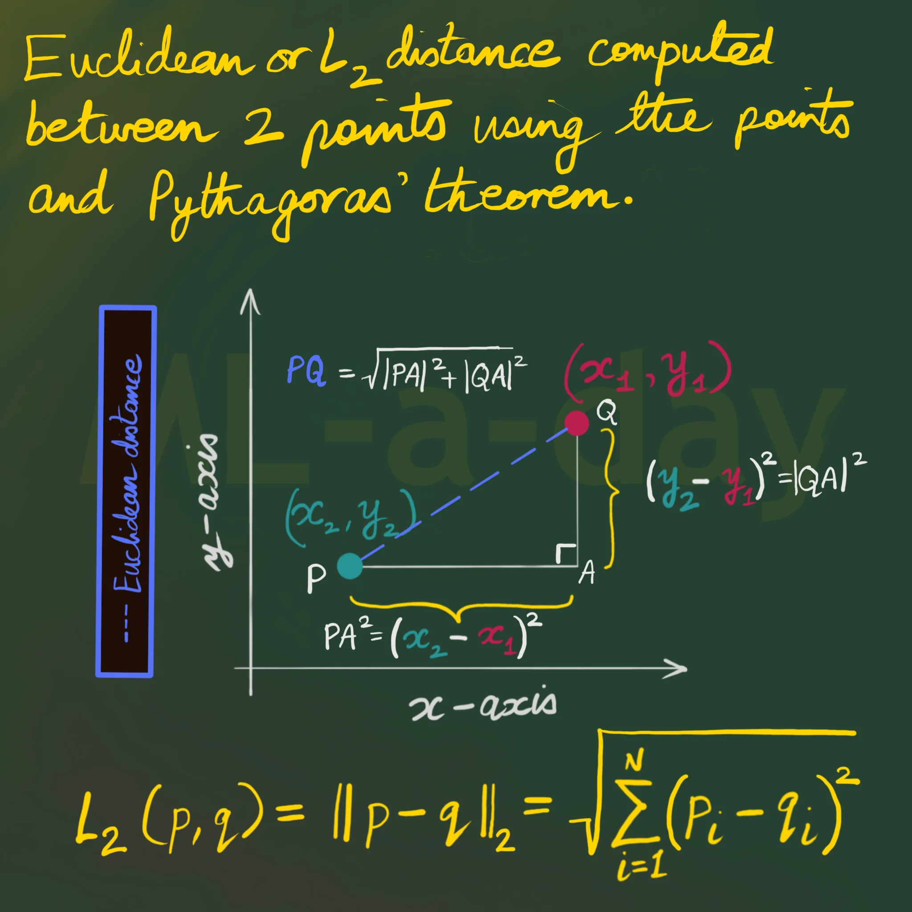

课程简介
- 这门课正式进入了AI的专业课，也是最重要的课，将伴随你整个AI生涯，你要学会CNN，Tensorflow，activation function, sigmoid function etc.
- 这是AI的核心课程。
主要内容
- based on the deep learning
评估总结
- Weekly Quiz：共 2 次，总计 10%
- Assignment 1（group）：小论文，总计 20%
- Assignment 2（group）：小论文，总计 20%
- Final Exam : 期末考试 总计 40%
课程理解
Week 1
Week 1 我没有听，大概主要是讲解 vector, matrix, feature, layer 这些东西。
Week 2
Week 2 从 Week 1 这里开始介绍，首先给了一个 $X$，像是 fruit sorting，你要找出苹果的 feature 是什么，然后有个 weight（权重）。通过你的 $X$ 矩阵乘于 $W$，也就是 $X_1W_1$，这就是一个如下公式：
$$y = \begin{cases} 0 & (b + w_1x_1 + w_2x_2 \leqslant 0) \\ 1 & (b + w_1x_1 + w_2x_2 > 0) \end{cases}$$然后介绍了每个参数是什么，最主要的就是计算 vector，用 $L_2\text{ distance}$ 进行计算。首先解释下上面的公式：
- $y$：代表输出变量（Output），在此公式中它只能取两个值：0（Non-Activated）或者 1 (Activated)。
- $x_1, x_2$：输入特征值（Input Features），主要表示代表传入给模型分析的已知条件或数据特征（例如：$x_1$ 代表商品的售价，$x_2$ 代表商品的评价得分）。
- $w_1, w_2$：权重（Weights），分别对应特征 $x_1$ 和 $x_2$ 的重要程度系数。权重绝对值越大，说明该特征对最终结果的影响越大。权重为正代表正向促进，为负代表负向抑制。
- $b$：偏置（Bias），模型的基础门槛（截距），它不依赖于任何输入变量，用于控制模型触发 1 状态的难易程度。
整体公式的逻辑：
中间的表达式 $b + w_1x_1 + w_2x_2$ 被称为加权综合得分：
- 当综合得分 $b + w_1x_1 + w_2x_2 \leqslant 0$ 时：未达到激活门槛，输出 $y = 0$。
- 当综合得分 $b + w_1x_1 + w_2x_2 > 0$ 时：成功激活门槛，输出 $y = 1$。
其次是 $L_2\text{ Distance}$：

这个是在 Reddit 上找的图，大家不太懂的也可以去 Reddit 上找些攻略，类似于知乎。主要逻辑就是 $PQ = \sqrt{|PA|^2 + |QA|^2}$，像是勾三股四弦五。然后衔接到矩阵去 Softmax 就是：
$$\text{向量 (Vectors)} \xrightarrow{\text{计算两两 } L_2 \text{ 距离}} \text{距离矩阵 (Distance Matrix)} \xrightarrow{\text{取负数/相似度转换}} \text{Logits} \xrightarrow{\text{Softmax}} \text{概率矩阵 (Probability Matrix)}$$这个逻辑是假设你有 $N$ 个 $D$ 维的样本向量，拼成一个矩阵 $X \in \mathbb{R}^{N \times D}$：
$$X = \begin{bmatrix} x_1 \\ x_2 \\ \vdots \\ x_N \end{bmatrix}$$我们想计算任意两个向量 $x_i$ 和 $x_j$ 之间的 $L_2$ 欧氏距离：
$$d_{ij} = \|x_i - x_j\|_2 = \sqrt{\sum_{k=1}^D (x_{ik} - x_{jk})^2}$$遍历所有的 $i$ 和 $j$，就会得到一个 $N \times N$ 的 $L_2$ 距离矩阵 $D$：
$$D = \begin{bmatrix} 0 & d_{12} & \dots & d_{1N} \\ d_{21} & 0 & \dots & d_{2N} \\ \vdots & \vdots & \ddots & \vdots \\ d_{N1} & d_{N2} & \dots & 0 \end{bmatrix}$$对于一个 $n$ 维向量 $\mathbf{x} = \begin{bmatrix} x_1 \\ x_2 \\ \vdots \\ x_n \end{bmatrix}$，其 $p$-范数定义为：
$$\|\mathbf{x}\|_p = \left( |x_1|^p + |x_2|^p + \dots + |x_n|^p \right)^{\frac{1}{p}} \quad (p > 0)$$其中有三种关键特性：
- $p = 0$（$L_0$ 伪范数/稀疏度）：统计向量中非零元素的个数。用于衡量模型的“稀疏性”（Sparsity），在压缩感知和特征选择中用来约束让尽可能多的参数变为 0。
- $p = 1$（$L_1$ 范数/曼哈顿距离）：向量元素绝对值的和（$\sum |x_i|$）。常用于 $L_1$ 正则化 (Lasso) 和 MAE 损失函数中，鼓励模型参数稀疏化，从而实现特征选择，剔除无用特征。
- $p = 2$（$L_2$ 范数/欧几里得距离）：传统的几何空间向量物理长度（$\sqrt{\sum x_i^2}$）。常用于深度学习中（如 L2 正则化/Weight Decay、MSE 损失函数、计算特征向量相似度），鼓励模型参数较小但不为零，降低过拟合风险。
这里所需要注意的规则是任何“范数”都必须满足以下三条基本原则：
- 非负性与正定性（Non-negativity）：$\|\mathbf{x}\|_p \ge 0$，且 $\|\mathbf{x}\|_p = 0$ 当且仅当 $\mathbf{x} = \mathbf{0}$。长度永远不可能为负数；只有全零向量的长度为零。
- 绝对齐次性（Absolute Homogeneity）：对任意标量 $\alpha$，有 $\|\alpha\mathbf{x}\|_p = |\alpha| \cdot \|\mathbf{x}\|_p$。向量放大/缩小 $k$ 倍，其范数也相应放大/缩小 $|k|$ 倍。
- 三角不等式（Triangle Inequality）：对任意向量 $\mathbf{x}$ 和 $\mathbf{y}$，有 $\|\mathbf{x} + \mathbf{y}\|_p \le \|\mathbf{x}\|_p + \|\mathbf{y}\|_p$。两点之间直线最短。
import torch
X = torch.tensor([
[1.0, 1.0, 7.0, 150.0],
[1.0, 1.0, 10.0, 190.0],
[0.0, 1.0, 9.0, 130.0]
])
W = torch.tensor([
[0.2, 0.1, 0.9, 0.3],
[0.5, 0.2, 0.4, 0.1],
[0.1, 0.6, 0.8, 0.2]
])
logits = X @ W.T
probabilities = torch.softmax(logits, dim=1)
print(probabilities)上面的的代码展示了如何使用 PyTorch 计算 softmax 概率。
- 数据维度：输入 $X \in \mathbb{R}^{3 \times 4}$（3 个样本，每个 4 个特征），权重矩阵 $W \in \mathbb{R}^{3 \times 4}$（3 个类别，每个 4 个权重）。
- Logits 得分矩阵：通过矩阵乘法 $Z = X W^\top$ 一次性并行算出所有样本对应各个类别的得分。PyTorch 代码写作：logits = X @ W.T。
- Softmax 归一化：对得分矩阵在行维度上做 Softmax（dim=1），将数值转换为每行为 1 的标准概率分布。
在 PyTorch 中，dim（Dimension）代表做计算的“轴”方向。
对于二维矩阵（形状为 [行, 列]），dim 的方向规则如下：
- dim=0 竖向（按列）计算。沿着行的方向滑动，对每一列单独做操作。
- dim=1 横向（按行）计算。沿着列的方向滑动，对每一行单独做操作。
logits 矩阵是一个 $3 \times 3$ 的矩阵（3 个样本 $\times$ 3 个类别）。所以写 logits = X @ W.T。
- 独立对“每一行”做 Softmax。
- 取出第 1 个样本的 3 个得分，算出一组概率，第一行相加等于 1。
- 取出第 2 个样本的 3 个得分，算出一组概率，第二行相加等于 1。
- 取出第 3 个样本的 3 个得分，算出一组概率，第三行相加等于 1。
假设输入矩阵为：$$\begin{bmatrix} a & b & c \\ d & e & f \end{bmatrix}$$
- dim=1 (横着做，常用)： 对 $[a, b, c]$ 算 Softmax，对 $[d, e, f]$ 算 Softmax $\rightarrow$ 每一行的和等于 1（符合“每个样本属于各类别的概率之和为 1”的分类需求）。
- dim=0 (竖着做)： 对 $[a, d]$ 算 Softmax，对 $[b, e]$ 算 Softmax，对 $[c, f]$ 算 Softmax $\rightarrow$ 每一列的和等于 1 （在分类任务中没有实际意义）。
以输入得分向量 $z = [2.0, 1.0, 3.0]$ 为例，温度系数 $T$ 和不同的 Softmax 变体主要通过改变对数得分（Logits）的相对差距，进而影响经由指数函数 $e^x$ 放大后的概率分布。
1. 什么是 Softmin？
公式：$p_i = \frac{e^{-x_i/T}}{\sum_j e^{-x_j/T}}$
作用：在指数项加入了负号。与 Softmax（寻找最大值）相反，Softmin 会让得分越小（或距离越近）的元素获得越高的概率。常用于处理距离矩阵（如 $L_2$ 距离）。
如何缩放 Logits：加上负号处理，相当于乘以 $-1/T$。原始 Logits $[2.0, 1.0, 3.0]$ 变为 $[-2.0, -1.0, -3.0]$。
输出概率分布：数值颠倒后，原先最小的 $1.0$ 变成了最大的 $-1.0$。经指数运算后，$e^{-1.0} \approx 0.368$ 成为最大项，获得最高概率（$66.52\%$），输出为 $[0.2447, 0.6652, 0.0900]$。
为什么是这个分布特征：针对“越小越好”的数据维度（如 $L_2$欧式距离）。在距离矩阵中，距离越小代表两个样本越相似，Softmin 能确保距离最近的样本获得最高的相似度概率。
2. 什么是 Hardmax？
作用：即“胜者通吃”（Winner-takes-all）。只把最大值的位置设为 1，其余位置全部设为 0（输出 One-hot 独热编码），它是一种不可导的离散选择。
- 如何缩放 Logits：Hardmax 不需要做数学除法缩放，它采用纯逻辑规则：直接找到向量中的最大值位置，置为 $1$，其他位置全部置为 $0$。
- 输出概率分布：得分 $3.0$ 最大（位于第 3 位），因此输出为 $[0.0, 0.0, 1.0]$。
- 为什么是这个分布特征：“胜者通吃”（One-hot 独热编码）。它的特点是绝对确定，但由于含有离散突变，在数学上不可导，因此无法直接用于深度学习的梯度下降更新。
3. 什么是温度系数（Temperature $T$）？
温度系数 $T$ 引入在指数项中（$e^{x_i/T}$），用来控制概率分布的尖锐与平缓程度：
- 低温度（如 $T = 0.5$）：放大得分差异，最大值的概率被拉得极高，输出非常确定（自信/尖锐）；
- Logits 缩放：$[2/0.5, 1/0.5, 3/0.5] = [4.0, 2.0, 6.0]$，得分差距从 $1.0$ 被放大到 $2.0$。
- 概率计算：指数项分别为 $e^4 \approx 54.6$, $e^2 \approx 7.4$, $e^6 \approx 403.4$。最大项 $e^6$ 占总和的 $86.68\%$，输出为 $[0.1173, 0.0159, 0.8668]$。
- 分布特征：陡峭/尖锐。拉大得分差距，突出高分项。
- 高温度（如 $T = 5$）：缩小得分差异，各类别的概率趋于平坦均匀，增加了随机性与多样性。
- Logits 缩放：$[2/5, 1/5, 3/5] = [0.4, 0.2, 0.6]$，得分差距缩小为 $0.2$。
- 概率计算：指数项分别为 $e^{0.4} \approx 1.49$, $e^{0.2} \approx 1.22$, $e^{0.6} \approx 1.82$，各数值非常接近。输出为 $[0.3289, 0.2693, 0.4018]$。
- 分布特征：平缓/趋于均匀（接近均等概率 $\frac{1}{3} \approx 0.333$）。缩小得分差距，增加了输出的随机性与多样性。
4. 当温度趋近于零（$T \to 0$）时会发生什么？
结论：Softmax 会直接退化为 Hardmax。
逻辑：当 $T \to 0^+$ 时，最大得分与其他得分的差距在除以 $T$ 后会被无限放大（$\frac{x_i}{T} \to \infty$）。求指数后，最大项占据绝对统治地位，导致其概率趋近于 1，其余项趋近于 0。这就是大语言模型（LLM）将 Temperature 设为 0 时输出会变得完全确定、不再具备随机性的原理。
实际操作如何缩放 Logits：计算 $z/T$。当 $T = 0.0001$ 时，Logits 变为 $[20000, 10000, 30000]$。
输出概率分布：最大项与其他项的差值被放大到了数万倍。在计算 $e^{z_i/T}$ 时， $e^{30000}$ 远大于 $e^{20000}$，导致最大项在分母中的占比无限接近 $100\%$，输出退化为 $[0.0, 0.0, 1.0]$。
为什么是这个分布特征：极低温度放大了得分之间的差距。在大语言模型（LLM）中，将 Temperature 设为 0 会让模型变得极度自信且固定，每次生成完全相同的答案。
得分向量 $z = [2.0, 1.0, 3.0]$ 的数值变化对比
| 机制 / 温度 $T$ | 缩放后 Logits ($z/T$) | 输出概率分布 $[p_1, p_2, p_3]$ | 分布特征 |
|---|---|---|---|
| Hardmax | — | [0.0000, 0.0000, 1.0000] |
胜者通吃 (One-hot) |
| $T \to 0$ (极其自信) | $[\infty, \infty, \infty]$ | [0.0000, 0.0000, 1.0000] |
退化为 Hardmax |
| $T = 0.5$ (低温度) | $[4.0, 2.0, 6.0]$ | [0.1173, 0.0159, 0.8668] |
陡峭 / 高确定性 |
| $T = 1.0$ (标准 Softmax) | $[2.0, 1.0, 3.0]$ | [0.2447, 0.0900, 0.6652] |
基准分布 |
| $T = 2.0$ (高温度) | $[1.0, 0.5, 1.5]$ | [0.3072, 0.1863, 0.5065] |
趋于平缓 |
| $T = 5.0$ (极高温度) | $[0.4, 0.2, 0.6]$ | [0.3289, 0.2693, 0.4018] |
接近均匀分布 ($\frac{1}{3}$) |
| Softmin ($T=1.0$) | $[-2.0, -1.0, -3.0]$ | [0.2447, 0.6652, 0.0900] |
最小值 $x_2=1$ 获得最高概率 |
概率分布直观示意（最大项 $x_3$ 的概率占比）：
import torch
X = torch.tensor([
[1.0, 1.0, 7.0, 150.0],
[1.0, 1.0, 10.0, 190.0],
[0.0, 1.0, 9.0, 130.0]
])
W1 = torch.tensor([
[0.2, 0.1, 0.9, 0.3],
[0.5, 0.2, 0.4, 0.1],
[0.1, 0.8, 0.6, 0.2]
])
H = X @ W1.T
print("H:\n", H)
W2 = torch.tensor([
[0.2, 0.4, 0.3],
[0.5, 0.1, 0.2]
])
Y = H @ W2.T
print("Y:\n", Y)
W_eff = W2 @ W1
print("W_eff:\n", W_eff)
Y_eff = X @ W_eff.T
print("Y_eff:\n", Y_eff)
prob = torch.softmax(Y, dim=1)
print("Softmax(Y):\n", prob)
OUTPUT：
H:
tensor([[51.6000, 18.5000, 35.1000],
[66.3000, 23.7000, 44.9000],
[47.2000, 16.8000, 32.2000]])
Y:
tensor([[28.2500, 34.6700],
[36.2100, 44.5000],
[25.8200, 31.7200]])
W_eff:
tensor([[0.2700, 0.3400, 0.5200, 0.1600],
[0.1700, 0.2300, 0.6100, 0.2000]])
Y_eff:
tensor([[28.2500, 34.6700],
[36.2100, 44.5000],
[25.8200, 31.7200]])
Softmax(Y):
tensor([[1.6260e-03, 9.9837e-01],
[2.5095e-04, 9.9975e-01],
[2.7320e-03, 9.9727e-01]])
这张图讲解的是多层前馈神经网络（Feedforward Neural Network）的矩阵并行前向传播过程，并借此揭示了深度学习中最核心的一个原理：如果隐藏层之间没有加非线性激活函数，多层神经网络会退化（折叠）为单层线性模型。
计算步骤逐行拆解
1. 输入层到隐藏层（$X \to H$）
- 输入矩阵 $X$：形状为 $3 \times 4$（3 个样本，每个样本 4 个输入特征）。
- 第一层权重 $W^{(1)}$：形状为 $3 \times 4$（有 3 个隐藏神经元，各对应 4 个输入的权重）。
- 隐藏层输出 $H$：通过 $H = X (W^{(1)})^\top$ 计算，得出形状为 $3 \times 3$ 的隐藏特征矩阵。
2. 隐藏层到输出层（$H \to Y$）
- 第二层权重 $W^{(2)}$：形状为 $2 \times 3$（预测 2 个最终类别，连接 3 个隐藏神经元）。
- 未归一化得分 $Y$（Logits）：通过 $Y = H (W^{(2)})^\top$ 计算，得出形状为 $3 \times 2$ 的最终得分矩阵。
核心考点：矩阵折叠与等价合并（$W_{\text{effective}}$）,图中间这三行推导是本页的灵魂所在：
$$Y = X(W^{(1)})^\top (W^{(2)})^\top = X (W^{(2)}W^{(1)})^\top$$$$W_{\text{effective}} = W^{(2)}W^{(1)}$$$$Y = X W_{\text{effective}}^\top$$
- 数学原理：因为矩阵乘法满足结合律，把两层权重矩阵直接相乘，$W^{(2)} W^{(1)}$（形状 $2 \times 3$ 乘以 $3 \times 4$）会合并成一个新的单一权重矩阵 $W_{\text{effective}}$（形状 $2 \times 4$）
- 核心结论：没有非线性激活函数（如 ReLU、Sigmoid）的“多层”网络，本质上和一个单层线性网络没有任何区别。 无论叠多少层，最终都只相当于做了一次普通的线性变换。
最终结果：Softmax概率计算
对 $Y$ 按行做 softmax(Y, dim=1) 归一化：
- 第 1 个样本的 2 类概率为 [0.0016, 0.9984]（几乎 100% 预测为类别 2）。
- 第 2 个样本概率为 [0.0003, 0.9997]。
- 第 3 个样本概率为 [0.0027, 0.9973]。

这张图讲解的是神经网络中单个神经元（微观视角）与整层网络矩阵（宏观视角）在数学上的完全等价性，展示了神经网络如何从“单神经元计算”组装成“全连接层矩阵运算”。
两种视角的对比
- 微观视角（Neuron / Micro view - 右侧）：把每个神经元拆开单独看。第 1 层的 3 个神经元分别拥有各自的权重向量（$W_1^1, W_2^1, W_3^1$）和偏置标量（$b_1^1, b_2^1, b_3^1$）。每个神经元独立进行一次点积加偏置：$$\bar{h}_1^1 = x W_1^1 + b_1^1 \quad \xrightarrow{\text{经过激活函数}} \quad h_1^1 = \sigma(\bar{h}_1^1)$$
- 宏观视角（Layer / Macro view - 左侧）：把同一层所有神经元的权重向量横向拼成一个大矩阵 $W^1$，偏置拼成一个行向量 $b^1$。利用一次矩阵乘法 $xW^1 + b^1$，直接并行算出一整层所有神经元的输出结果。
核心映射与符号拆解
- 矩阵列与神经元：宏观矩阵 $W^1$ 的每一列，正好对应微观下某个神经元的权重：$$W^1 = \begin{bmatrix} W_1^1 & W_2^1 & W_3^1 \end{bmatrix} = \begin{bmatrix} 1 & 1 & -2 \\ -1 & 1 & 2 \\ 3 & 2 & 1 \end{bmatrix}$$
- 符号的具体含义：
- $x$：输入特征向量 $[x_1, x_2, x_3]$.
- $\bar{h}$（带有横线）：激活前的加权综合得分（Pre-activation），即 $\bar{h} = xW + b$。
- $\sigma$（Sigma）：非线性激活函数（如 Sigmoid / ReLU）。
- $h$：激活后的神经元输出（Post-activation），即 $h = \sigma(\bar{h})$。
为什么深度学习要使用宏观视角？
在 PyTorch 或 TensorFlow 中编写代码时，我们绝不会用 for 循环去逐个计算每一个神经元（微观方式），而是直接写成矩阵乘法 h = torch.sigmoid(x @ W + b)（宏观方式）。这种矩阵化表示能让 GPU 进行大规模并行计算，大幅提升模型训练速度。
假设输入特征向量为 $\mathbf{x} = [1, 0, 1]$，并选择计算简便的 ReLU 激活函数（受刺激点亮为正数，负数则置 zero：$\sigma(z) = \max(0, z)$）。
第一层（Layer 1）：从输入 $\mathbf{x}$ 到 $h^1$
1. 微观视角（单个神经元逐个计算）
- 神经元 1（取 $W^1$ 的第 1 列与偏置 $b_1^1$）：$$\bar{h}_1^1 = \mathbf{x} W_1^1 + b_1^1 = (1 \times 1 + 0 \times (-1) + 1 \times 3) + (-1.5) = 4 - 1.5 = 2.5$$$$h_1^1 = \text{ReLU}(2.5) = 2.5$$
- 神经元 2（取 $W^1$ 的第 2 列与偏置 $b_2^1$）：$$\bar{h}_2^1 = \mathbf{x} W_2^1 + b_2^1 = (1 \times 1 + 0 \times 1 + 1 \times 2) + (-0.5) = 3 - 0.5 = 2.5$$$$h_2^1 = \text{ReLU}(2.5) = 2.5$$
- 神经元 3（取 $W^1$ 的第 3 列与偏置 $b_3^1$）：$$\bar{h}_3^1 = \mathbf{x} W_3^1 + b_3^1 = (1 \times (-2) + 0 \times 2 + 1 \times 1) + 0.5 = -1 + 0.5 = -0.5$$$$h_3^1 = \text{ReLU}(-0.5) = 0$$
得出第一层激活后的输出向量：$h^1 = [2.5, 2.5, 0]$。
2. 宏观视角（全层矩阵并行计算）
直接使用矩阵乘法加偏置：$$\bar{h}^1 = \mathbf{x} W^1 + b^1 = [1, 0, 1] \begin{bmatrix} 1 & 1 & -2 \\ -1 & 1 & 2 \\ 3 & 2 & 1 \end{bmatrix} + [-1.5, -0.5, 0.5]$$$$\bar{h}^1 = [4, 3, -1] + [-1.5, -0.5, 0.5] = [2.5, 2.5, -0.5]$$
激活函数运算：$$h^1 = \text{ReLU}([2.5, 2.5, -0.5]) = [2.5, 2.5, 0]$$两种视角的计算结果完美一致。
第二层（Layer 2）：从 $h^1$ 到最终输出 $h^2$
将第一层算出的输出 $h^1 = [2.5, 2.5, 0]$ 作为第二层的输入：$$\bar{h}^2 = h^1 W^2 + b^2 = [2.5, 2.5, 0] \begin{bmatrix} -1 & 2 \\ 1 & 1 \\ -1 & -2 \end{bmatrix} + [-0.5, 0.5]$$
先做矩阵乘法得到各个通道的得分：$$h^1 W^2 = [2.5 \times (-1) + 2.5 \times 1 + 0 \times (-1),$$
$$\quad 2.5 \times 2 + 2.5 \times 1 + 0 \times (-2)] = [0, 7.5]$$
加上偏置向量 $b^2$：$$\bar{h}^2 = [0, 7.5] + [-0.5, 0.5] = [-0.5, 8.0]$$
经过 ReLU 激活函数后，得到神经网络最终输出：$$h^2 = \text{ReLU}([-0.5, 8.0]) = [0, 8.0]$$

在看这张图之前，我们得先知道什么是XOR；XOR（异或）是一个经典的非线性可分问题，它要求神经网络能够学习到非线性的决策边界。XOR（Exclusive OR，异或） 是逻辑学与计算机科学中的一种基本逻辑运算，核心规则是：“同为假，异为真”（即输入两个相同的值输出 0，输入两个不同的值输出 1）。
真值表（Truth Table）
在机器学习中，通常将 0/1 映射为负例与正例：
| 输入 $x_1$ | 输入 $x_2$ | 输出 $y = x_1 \oplus x_2$ | 类别归属 |
|---|---|---|---|
| 0 | 0 | 0 | Class 0 |
| 0 | 1 | 1 | Class 1 |
| 1 | 0 | 1 | Class 1 |
| 1 | 1 | 0 | Class 0 |
为何 XOR 在深度学习中极其重要？XOR 并不只是一道简单的逻辑题，它是深度学习发展史上的里程碑级难题。
1. 几何上的“线性不可分”（Linearly Inseparable）
如果在二维平面直角坐标系中把这四个点画出来：
- 点 $(0,0)$ 和 $(1,1)$ 属于 Class 0（对角线上的两点）
- 点 $(0,1)$ 和 $(1,0)$ 属于 Class 1（另一条对角线上的两点）
在几何上，绝对找不到任何一条单一的直线（$w_1x_1 + w_2x_2 + b = 0$）能够把 Class 0 和 Class 1 完全分开。
2. 引发历史上第一个“AI 寒冬”
1969 年，人工智能先驱马文·明斯基（Marvin Minsky）证明了当时的单层感知机（Single-layer Perceptron）无法解决 XOR 问题。由于单层网络本质上只是一个线性分类器，这一发现直接揭示了当时 AI 模型的致命局限，导致人工智能研究陷入了长达十年的停滞（即第一次 AI 寒冬）。
3. 现代深度学习的破局之道
要解决 XOR 问题，神经网络必须具备两个要素：非线性激活函数和多层结构。
- 多层神经网络（MLP）：通过引入隐藏层（Hidden Layers），将低维不可分特征映射到高维空间。
- 非线性激活函数（Non-linear Activation Functions）：正如你前面 PPT 案例所示，只有加上了 ReLU 或 Sigmoid 等非线性激活函数，网络才能将空间“扭曲/折叠”，从而用多条分类面把原本缠绕在一起的数据彻底分开。
然后我们再来看这张图用具体数值演示了 XOR（异或）分类任务在缺乏非线性激活函数时是如何彻底失效崩溃的。
1. 输入特征与分类目标,数据集包含 4 个二维样本，按 XOR 规则分类：
- Class 0（同号）：$S_1(-1, -1)$ 和 $S_4(+1, +1)$
- Class 1（异号）：$S_2(-1, +1)$ 和 $S_3(+1, -1)$
矩阵 $X$ 巧妙地将二维坐标扩展为了四维特征矩阵 $[x_1, x_2, -x_1, -x_2]$。
2. 第一层运算（隐藏层 $Z_1 = X W_1$）
由于没有使用激活函数（即恒等映射 $H_1 = Z_1$），输入矩阵直接乘以权重 $W_1$：
- $S_1(-1, -1)$ 算得 $H_1 = [-2.00, 2.00, 0.00, 0.00]$
- $S_4(+1, +1)$ 算得 $H_1 = [2.00, -2.00, 0.00, 0.00]$
这一步隐藏层生成了含有正负数值的线性组合。
3. 第二层运算与相抵（$\text{Logits} = H_1 W_2$）
权重 $W_2$ 的逻辑是将 $H_1$ 和 $H_2$ 累加赋给 Class 0，将 $H_3$ 和 $H_4$ 累加赋给 Class 1：
- 对 $S_1$ 计算 Class 0 得分：$(-2.00 \times 1) + (2.00 \times 1) + 0 + 0 = -2 + 2 = \mathbf{0.00}$
- 对 $S_4$ 计算 Class 0 得分：$(2.00 \times 1) + (-2.00 \times 1) + 0 + 0 = 2 - 2 = \mathbf{0.00}$
致命问题出现：由于缺乏非线性截断，正负得分在第二层相加时完全被相抵清零。所有 4 个样本算出的最终得分 Logits 全变成了 $[0.00, 0.00]$。
4. 结果退化（Softmax）
将 Logits $[0, 0]$ 输入 Softmax 计算概率：$$\text{Softmax}([0, 0]) = [0.500, 0.500]$$神经网络对所有样本的输出概率都是 $50\%$，模型退化为纯粹的“随机瞎猜”。
关键结论：激活函数（如 ReLU）如何救场？
假设在第一层后加入了 $\text{ReLU}(z) = \max(0, z)$ 激活函数：
- $S_1$ 算出的负数 $-2.00$ 会被强制截断清零，隐藏状态变为 $H_1 = [0, 2.00, 0, 0]$。
- 再次计算 Class 0 得分时，变成 $0 + 2.00 = 2.00$，得分不再会被抵消！
非线性激活函数的“非对称截断”破坏了正负相抵的线性僵局，才使神经网络获得了扭曲特征空间、解决非线性分类的能力。

这张图通过有无激活函数（ReLU）的对照实验，直观展示了非线性激活函数在解决 XOR 异或问题时起到的决定性作用。
| 步骤 / 指标 | 无激活函数 (Without Activation) | 有 ReLU 激活函数 (With ReLU) |
|---|---|---|
| 隐藏层输出 $H_1$ | $H_1 = Z_1$，保留了负数（如 $-2.00$） | $H_1 = \text{ReLU}(Z_1)$，负数全部被强制截断为 $0.00$ |
| Logits 计算 | $H_1 W_2$ 计算时正负数直接抵消，结果全为 $[0.00, 0.00]$ | 负数归零后消除相抵，得到高对比度得分 $[2.00, 0.00]$ 或 $[0.00, 2.00]$ |
| Softmax 概率 | 两类概率均为 $[0.500, 0.500]$（概率完全均等） | 正确类别的概率提升至 $0.881$（判定高度自信） |
| 分类准确率 | 50.0%（模型只能随机盲猜） | 100.0%（4 个数据点全部精准预测） |
核心原理解析
1. 为什么无激活函数会失败？
在第二行中，$Z_1$ 的输出同时存在 $2.00$ 与 $-2.00$。由于没有激活函数，$W_2$ 矩阵直接将它们相加，导致 $(-2.00) + 2.00 = 0.00$。这种正负相抵使得神经网络无法提取任何有用的特征空间变化，最终准确率卡在 $50\%$。
2. ReLU 做了什么？
第三行加入 $\text{ReLU}(z) = \max(0, z)$ 后，所有的负数（$-2.00$）被直接清零变为 $0.00$。这打破了线性的正负抵消机制，使得 $W_2$ 能够顺利计算出明确的预测得分（$2.00$），把 XOR 数据完美映射到了非线性可分的空间中。

这张 PPT 直观地阐明了激活函数（Activation Functions）的核心使命：通过引入非线性（Non-linearity），赋予神经网络拟合复杂曲面判定边界的能力。
三图对比解析
- 原始数据（Our data）：绿色数据点集中在中心区域，粉色数据点包围在四周，属于典型的非线性可分数据集（无法用一条直线将两类划分开）。
- 无激活函数（Networks without activations）：无论网络加深到多少层，缺乏非线性激活函数时，模型整体仍是一个线性函数。分类边界被迫保持为一条硬邦邦的直线，引发大量误判。
- 含激活函数（Networks with activations）：引入非线性激活函数后，网络能够弯曲、折叠特征空间，生成平滑收拢的非线性决策边界，将绿色数据点精准包裹隔离。
关键数学本质
如果隐藏层不施加激活函数 $\sigma(\cdot)$，多层神经网络的前向传播会直接折叠为单个矩阵运算：$$\mathbf{y} = W_2 (W_1 \mathbf{x} + \mathbf{b}_1) + \mathbf{b}_2 = (W_2 W_1)\mathbf{x} + (W_2 \mathbf{b}_1 + \mathbf{b}_2) = W_{net} \mathbf{x} + \mathbf{b}_{net}$$多层线性函数的复合仍然是线性函数。只有引入激活函数后，网络才打破了线性组合的约束，具备拟合任意复杂决策边界的能力（通用近似定理）。

| 激活函数 | 数学公式 $\sigma(z)$ | 输出范围 | 导数公式 $\sigma'(z)$ | 核心特性与局限 |
|---|---|---|---|---|
| Sigmoid | $\frac{1}{1 + e^{-z}}$ | $(0, 1)$ | $\sigma(z)(1 - \sigma(z))$ | 处处连续可导，但两侧极易引发梯度消失（导数最大值仅 0.25）；非零中心化导致收敛慢。 |
| Tanh | $\frac{e^z - e^{-z}}{e^z + e^{-z}}$ | $(-1, 1)$ | $1 - \sigma^2(z)$ | 零中心化（Zero-centered），收敛速度显著快于 Sigmoid；但两侧饱和区依然存在梯度消失。 |
| ReLU | $\max(0, z)$ | $[0, +\infty)$ | $$\begin{cases} 1 & \text{if } z \ge 0 \\ 0 & \text{otherwise} \end{cases}$$ | 计算极快（无指数运算），正半轴无上限可缓解梯度消失；缺点是 $z=0$ 不可导且负半轴有坏死风险。 |
深度学习核心原理解析
1. 梯度饱和与梯度消失（Gradient Vanishing）
当 $|z|$ 较大（如大于 4）时，Sigmoid 与 Tanh 函数输出进入饱和区，其导数迅速衰减接近 0。根据链式法则，反向传播时这些小于 1 的导数连续相乘，会导致深层网络的梯度呈指数级衰减，前层参数无法获得有效更新。
2. 零中心化（Zero-centered）对收敛的影响
Sigmoid 输出恒为正数，导致下一层神经元的输入全部同号，反向传播计算出的权重梯度要么全正要么全负，更新轨迹呈现低效的“之字形”（Zig-zag）。Tanh 输出以 0 为中心，消除了这种偏置现象，因而收敛速度更快。
3. 为什么 ReLU 成为现代深度学习的首选？
- 梯度无损传递：当 $z > 0$ 时，导数恒为 $1$，彻底解决了正半轴上的梯度消失问题。
- 计算效率极高：仅需一次简单的阈值判断（`if z > 0`），抛弃了高代价的指数运算 $e^z$。
- 工程极简支持：在 $z=0$ 的数学不可导点，实际工程中直接定义次梯度（Subgradient，如取右导数 $1$ 或左导数 $0$），完全不影响梯度下降收敛。

这张 PPT 通过反例探讨了一个核心问题：“我们总是需要激活函数吗？在某些特定情况下，加不加 ReLU 效果可能完全一样。”
| 运算环节 | 无激活函数 (No Activation) | 有 ReLU 激活 (With ReLU) | 现象说明 |
|---|---|---|---|
| 中间结果 $Z_1 = X W_1$ | $[51.60, 18.50, 35.10]$ | $[51.60, 18.50, 35.10]$ | 输入 $X \ge 0$ 且权重 $W_1 \ge 0$，乘积全为正数 |
| 隐藏层输出 $H_1$ | $H_1 = Z_1$ | $H_1 = \text{ReLU}(Z_1) = Z_1$ | 当 $z > 0$ 时，$\text{ReLU}(z) = z$，失去截断作用 |
| 预测与概率 (Softmax) | Class 1 ($99.84\%$) | Class 1 ($99.84\%$) | 后续计算轨迹与概率分布完全重合 |
深度思考：这对神经网络意味着什么？
1. 激活函数的“生效条件”
激活函数要真正为网络引入非线性能力，输入数据必须能够触及激活函数的非线性区域（对 ReLU 而言，即存在 $z \le 0$ 的负数部分）。如果所有神经元输出全落在线性区间（$z > 0$），ReLU 就退化为纯线性映射 $f(x) = x$。
2. 与 XOR 异或案例的对比
在前面的 XOR 案例中，$Z_1$ 输出了负数（$-2.00$），ReLU 成功将负数截断为 $0.00$，消除了第二层计算时的正负抵消；而在本例中，由于没有任何负数被截断，ReLU 无法发挥任何扭曲特征空间的作用。
3. 核心结论
代码里写了激活函数 $\neq$ 模型获得了非线性能力。网络参数的初始化与输入数据分布决定了激活函数能否被真正“激活”。如果所有节点都工作在线性区，多层神经网络本质上依然只是一个单层线性分类器。